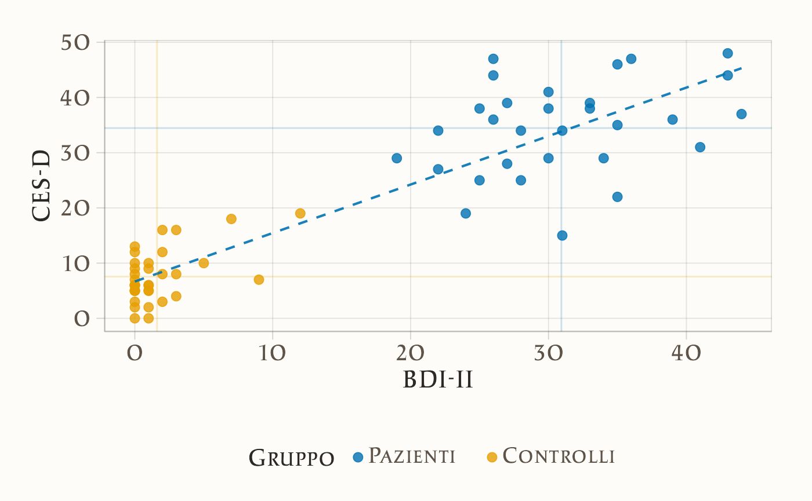
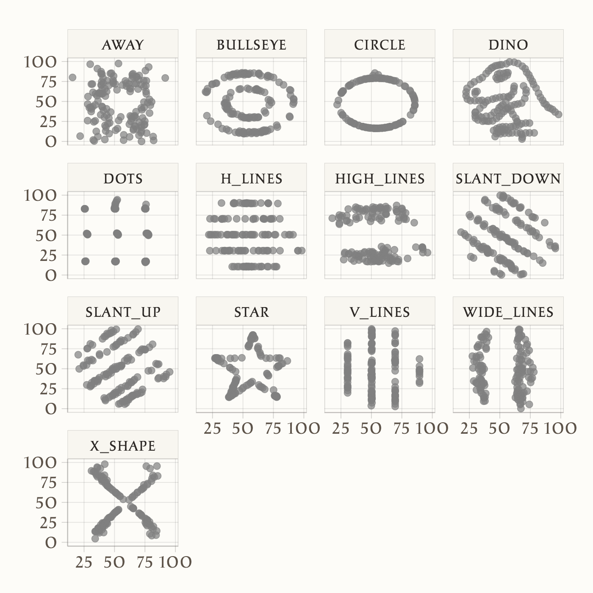

here::here("code", "_common.R") |>
source()
# Load packages
if (!requireNamespace("pacman")) install.packages("pacman")
pacman::p_load(mice, labelled, haven, pointblank)13 Relazioni tra variabili: correlazione e covarianza
Prerequisiti
Concetti e competenze chiave
- Calcolare la correlazione e la covarianza;
- Interpretare gli indici di correlazione e covarianza.
Preparazione del Notebook
13.1 Introduzione
Nonostante sia un’operazione di base, l’analisi delle associazioni tra variabili rappresenta uno degli aspetti più controversi nell’ambito dell’analisi dei dati psicologici. Sebbene possa sembrare un passaggio naturale dopo l’analisi univariata, questo processo solleva numerose questioni metodologiche e concettuali.
Tradizionalmente, in psicologia, l’analisi delle associazioni tra variabili è stata considerata come l’obiettivo finale del processo di ricerca. Questa visione si basa sull’idea che la descrizione delle relazioni tra variabili fornisca una spiegazione esaustiva dei fenomeni psicologici. Tale approccio trova le sue radici storiche nel pensiero di Karl Pearson (1911), il quale sosteneva che la spiegazione scientifica si esaurisse una volta delineate le associazioni tra le variabili osservate:
Quanto spesso, quando è stato osservato un nuovo fenomeno, sentiamo che viene posta la domanda: ‘qual è la sua causa?’. Questa è una domanda a cui potrebbe essere assolutamente impossibile rispondere. Invece, può essere più facile rispondere alla domanda: ‘in che misura altri fenomeni sono associati con esso?’. Dalla risposta a questa seconda domanda possono risultare molte preziose conoscenze.
Sebbene sia indubbio che rispondere alla seconda domanda posta da Pearson sia relativamente semplice, è altresì evidente che la nostra comprensione di un fenomeno non può dipendere unicamente dalle informazioni fornite dalle correlazioni.
In contrasto con questa visione tradizionale, la “Causal Revolution” propone un paradigma radicalmente diverso secondo il quale le associazioni tra variabili sono considerate come epifenomeni, mentre l’obiettivo principale della ricerca è l’identificazione e la comprensione delle relazioni causali: per comprendere veramente i fenomeni psicologici è essenziale indagare le cause sottostanti, andando oltre la mera descrizione delle associazioni.
La discussione dei metodi utilizzati per individuare le relazioni causali sarà trattata successivamente. In questo capitolo, ci concentreremo sui concetti statistici fondamentali necessari per descrivere le associazioni lineari tra variabili. È importante sottolineare che, sebbene esistano indici statistici per quantificare associazioni non lineari, la maggior parte degli psicologi si limita all’utilizzo di indici lineari.
Nel linguaggio comune, termini come “dipendenza”, “associazione” e “correlazione” vengono spesso usati in modo intercambiabile. Tuttavia, da un punto di vista tecnico, è importante distinguere questi concetti:
- Associazione: questo termine indica una relazione generale tra variabili, dove la conoscenza del valore di una variabile fornisce informazioni su un’altra.
- Correlazione: descrive una relazione specifica e quantificabile, indicando se due variabili tendono a variare insieme in modo sistematico. Ad esempio, in una correlazione positiva, se \(X > \mu_X\), è probabile che anche \(Y > \mu_Y\). La correlazione specifica il segno e l’intensità di una relazione lineare.
- Dipendenza: indica una relazione causale tra le variabili, dove la variazione della variabile causale porta probabilisticamente alla variazione della variabile dipendente.
È cruciale comprendere che non tutte le associazioni sono correlazioni e, soprattutto, che la correlazione non implica necessariamente causalità. Questa distinzione è fondamentale per interpretare correttamente i dati e evitare conclusioni errate sulle relazioni tra variabili.
In questo capitolo, esamineremo due misure statistiche fondamentali per valutare la relazione lineare tra due variabili: la covarianza e la correlazione. Questi indici ci permettono di descrivere il grado e la direzione dell’associazione lineare tra variabili, quantificando come queste variano congiuntamente.
13.2 I dati grezzi
Per illustrare la correlazione e la covarianza, analizzeremo i dati raccolti da Zetsche et al. (2019) in uno studio che indaga le aspettative negative come meccanismo chiave nel mantenimento e nella reiterazione della depressione. Nello specifico, i ricercatori si sono proposti di determinare se gli individui depressi sviluppano aspettative accurate riguardo al loro umore futuro o se tali aspettative sono distortamente negative.
Uno dei loro studi ha coinvolto un campione di 30 soggetti con almeno un episodio depressivo maggiore, confrontati con un gruppo di controllo composto da 37 individui sani. La misurazione del livello di depressione è stata effettuata tramite il Beck Depression Inventory (BDI-II).
Il BDI-II è uno strumento di autovalutazione utilizzato per valutare la gravità della depressione in adulti e adolescenti. Il test è stato sviluppato per identificare e misurare l’intensità dei sintomi depressivi sperimentati nelle ultime due settimane. I 21 item del test sono valutati su una scala a 4 punti, dove 0 rappresenta il grado più basso e 3 il grado più elevato di sintomatologia depressiva.
Nell’esercizio successivo, ci proponiamo di analizzare i punteggi di depressione BDI-II nel campione di dati fornito da Zetsche et al. (2019).
13.3 Definizione delle relazioni tra variabili
Nel contesto delle indagini statistiche, spesso non ci limitiamo a esaminare la distribuzione di una singola variabile. Invece, il nostro interesse si concentra sulla relazione che emerge nei dati tra due o più variabili. Ma cosa significa esattamente quando diciamo che due variabili hanno una relazione?
Per comprendere ciò, prendiamo ad esempio l’altezza e l’età tra un gruppo di bambini. In generale, è possibile notare che all’aumentare dell’età di un bambino, aumenta anche la sua altezza. Pertanto, conoscere l’età di un bambino, ad esempio tredici anni, e l’età di un altro, sei anni, ci fornisce un’indicazione su quale dei due bambini sia più alto.
Nel linguaggio statistico, definiamo questa relazione tra altezza e età come positiva, il che significa che all’aumentare dei valori di una delle variabili (in questo caso, l’età), ci aspettiamo di vedere valori più elevati anche nell’altra variabile (l’altezza). Tuttavia, esistono anche relazioni negative, in cui l’aumento di una variabile è associato a un diminuzione dell’altra (ad esempio, più età è correlata a meno pianto).
Non si tratta solo di relazioni positive o negative; ci sono anche situazioni in cui le variabili non hanno alcuna relazione tra loro, definendo così una relazione nulla. Inoltre, le relazioni possono variare nel tempo, passando da positive a negative o da fortemente positive a appena positiva. In alcuni casi, una delle variabili può essere categorica, rendendo difficile parlare di “maggioranza” o “minoranza” ma piuttosto di “differente” (ad esempio, i bambini più grandi potrebbero semplicemente avere diverse preferenze rispetto ai bambini più piccoli, senza necessariamente essere “migliori” o “peggiori”).
13.4 Grafico a dispersione
Il metodo più diretto per visualizzare la relazione tra due variabili continue è tramite un grafico a dispersione, comunemente noto come “scatterplot”. Questo tipo di diagramma rappresenta le coppie di dati ottenute da due variabili, posizionandole sull’asse delle ascisse (orizzontale) e delle ordinate (verticale).
Per rendere l’idea più chiara, consideriamo i dati dello studio condotto da Zetsche et al. (2019), in cui i ricercatori hanno utilizzato due scale psicometriche, il Beck Depression Inventory II (BDI-II) e la Center for Epidemiologic Studies Depression Scale (CES-D), per misurare il livello di depressione nei partecipanti. Il BDI-II è uno strumento di autovalutazione che valuta la presenza e l’intensità dei sintomi depressivi in pazienti adulti e adolescenti con diagnosi psichiatrica, mentre la CES-D è una scala di autovalutazione progettata per misurare i sintomi depressivi sperimentati nella settimana precedente nella popolazione generale, in particolare negli adolescenti e nei giovani adulti. Poiché entrambe le scale misurano lo stesso costrutto, ovvero la depressione, ci aspettiamo una relazione tra i punteggi ottenuti dal BDI-II e dalla CES-D. Un diagramma a dispersione ci consente di esaminare questa relazione in modo visuale e intuitivo.
# Leggi i dati dal file CSV
df = rio::import(here::here("data", "data.mood.csv"))
# Seleziona le colonne di interesse
df <- df |>
dplyr::select("esm_id", "group", "bdi", "cesd_sum")
# Rimuovi le righe duplicate
df <- df[!duplicated(df), ]
# Rimuovi le righe con valori mancanti nella colonna "bdi"
df <- df[!is.na(df$bdi), ]Posizionando i valori del BDI-II sull’asse delle ascisse e quelli del CES-D sull’asse delle ordinate, ogni punto sul grafico rappresenta un individuo, di cui conosciamo il livello di depressione misurato dalle due scale. È evidente che i valori delle scale BDI-II e CES-D non possono coincidere per due motivi principali: (1) la presenza di errori di misurazione e (2) l’utilizzo di unità di misura arbitrarie per le due variabili. L’errore di misurazione è una componente inevitabile che influisce in parte su qualsiasi misurazione, ed è particolarmente rilevante in psicologia, dove la precisione degli strumenti di misurazione è generalmente inferiore rispetto ad altre discipline, come la fisica. Il secondo motivo per cui i valori delle scale BDI-II e CES-D non possono essere identici è che l’unità di misura della depressione è una questione arbitraria e non standardizzata. Tuttavia, nonostante le differenze dovute agli errori di misurazione e all’uso di unità di misura diverse, ci aspettiamo che, se le due scale misurano lo stesso costrutto (la depressione), i valori prodotti dalle due scale dovrebbero essere associati linearmente tra di loro. Per comprendere meglio il concetto di “associazione lineare”, è possibile esaminare i dati attraverso l’utilizzo di un diagramma a dispersione.
# Crea uno scatterplot con colori diversi per i due gruppi
# Separate data by group
mdd_data <- df[df$group == "mdd", ]
ctl_data <- df[df$group == "ctl", ]
# Calculate linear regression coefficients
coeff_combined <- lm(cesd_sum ~ bdi, data = df)$coefficients
# Define the linear regression line
line_combined <- function(x) coeff_combined[1] + coeff_combined[2] * x
# Generate x values for the regression line
x_values <- seq(min(df$bdi), max(df$bdi), length.out = 100)
# Plot scatter plot and regression line
ggplot() +
geom_point(data = mdd_data, aes(x = bdi, y = cesd_sum, color = "Pazienti"), alpha = 0.7) +
geom_point(data = ctl_data, aes(x = bdi, y = cesd_sum, color = "Controlli"), alpha = 0.7) +
geom_line(aes(x = x_values, y = line_combined(x_values)), linetype = "dashed", color = "orange") +
geom_vline(aes(xintercept = mean(mdd_data$bdi, na.rm = TRUE)), color = "blue", alpha = 0.2) +
geom_vline(aes(xintercept = mean(ctl_data$bdi, na.rm = TRUE)), color = "red", alpha = 0.2) +
geom_hline(aes(yintercept = mean(mdd_data$cesd_sum, na.rm = TRUE)), color = "blue", alpha = 0.2) +
geom_hline(aes(yintercept = mean(ctl_data$cesd_sum, na.rm = TRUE)), color = "red", alpha = 0.2) +
labs(x = "BDI-II", y = "CESD", color = "Gruppo") +
scale_color_manual(values = c("Pazienti" = "blue", "Controlli" = "red"))
Osservando il grafico a dispersione, è evidente che i dati mostrano una tendenza a distribuirsi in modo approssimativamente lineare. In termini statistici, ciò suggerisce una relazione di associazione lineare tra i punteggi CES-D e BDI-II.
Tuttavia, è importante notare che la relazione lineare tra le due variabili è lontana dall’essere perfetta. In una relazione lineare perfetta, tutti i punti nel grafico sarebbero allineati in modo preciso lungo una retta. Nella realtà, la dispersione dei punti dal comportamento lineare ideale è evidente.
Di conseguenza, sorge la necessità di quantificare numericamente la forza e la direzione della relazione lineare tra le due variabili e di misurare quanto i punti si discostino da una relazione lineare ideale. Esistono vari indici statistici a disposizione per raggiungere questo obiettivo.
13.5 Covarianza
Iniziamo a considerare il più importante di tali indici, chiamato covarianza. In realtà la definizione di questo indice non ci sorprenderà più di tanto in quanto, in una forma solo apparentemente diversa, l’abbiamo già incontrata in precedenza. Ci ricordiamo infatti che la varianza di una generica variabile \(X\) è definita come la media degli scarti quadratici di ciascuna osservazione dalla media:
\[ S_{XX} = \frac{1}{n} \sum_{i=1}^n(X_i - \bar{X}) (X_i - \bar{X}). \]
La varianza viene talvolta descritta come la “covarianza di una variabile con sé stessa”. Adesso facciamo un passo ulteriore. Invece di valutare la dispersione di una sola variabile, ci chiediamo come due variabili \(X\) e \(Y\) “variano insieme” (co-variano). È facile capire come una risposta a tale domanda possa essere fornita da una semplice trasformazione della formula precedente che diventa:
\[ S_{XY} = \frac{1}{n} \sum_{i=1}^n(X_i - \bar{X}) (Y_i - \bar{Y}). \tag{13.1}\]
L’Equazione 13.1 ci fornisce la definizione della covarianza.
13.5.1 Interpretazione
Per capire il significato dell’Equazione 13.1, supponiamo di dividere il grafico riportato nella Sezione 13.4 in quattro quadranti definiti da una retta verticale passante per la media dei valori BDI-II e da una retta orizzontale passante per la media dei valori CES-D. Numeriamo i quadranti partendo da quello in basso a sinistra e muovendoci in senso antiorario.
Se prevalgono punti nel I e III quadrante, allora la nuvola di punti avrà un andamento crescente (per cui a valori bassi di \(X\) tendono ad associarsi valori bassi di \(Y\) e a valori elevati di \(X\) tendono ad associarsi valori elevati di \(Y\)) e la covarianza avrà segno positivo. Mentre se prevalgono punti nel II e IV quadrante la nuvola di punti avrà un andamento decrescente (per cui a valori bassi di \(X\) tendono ad associarsi valori elevati di \(Y\) e a valori elevati di \(X\) tendono ad associarsi valori bassi di \(Y\)) e la covarianza avrà segno negativo. Dunque, il segno della covarianza ci informa sulla direzione della relazione lineare tra due variabili: l’associazione lineare si dice positiva se la covarianza è positiva, negativa se la covarianza è negativa.
Esercizio. Implemento l’Equazione 13.1 in R.
Per i dati mostrati nel diagramma, la covarianza tra BDI-II e CESD è 207.4
x = df$bdi
y = df$cesd_sum
cov_value(x, y)
#> [1] 207.4265Oppure, in maniera più semplice:
Lo stesso risultato si ottiene con la funzione cov:
La funzione cov(x, y) calcola la covarianza tra due array, x e y utilizzando \(n-1\) al denominatore.
13.6 Correlazione
La direzione della relazione tra le variabili è indicata dal segno della covarianza, ma il valore assoluto di questo indice non fornisce informazioni utili poiché dipende dall’unità di misura delle variabili. Ad esempio, considerando l’altezza e il peso delle persone, la covarianza sarà più grande se l’altezza è misurata in millimetri e il peso in grammi, rispetto al caso in cui l’altezza è in metri e il peso in chilogrammi. Pertanto, per descrivere la forza e la direzione della relazione lineare tra due variabili in modo adimensionale, si utilizza l’indice di correlazione.
La correlazione è ottenuta standardizzando la covarianza tramite la divisione delle deviazioni standard (\(s_X\), \(s_Y\)) delle due variabili:
\[ r = \frac{S_{XY}}{S_X S_Y}. \tag{13.2}\]
La quantità che si ottiene dall’Equazione 13.2 viene chiamata correlazione di Bravais-Pearson (dal nome degli autori che, indipendentemente l’uno dall’altro, l’hanno introdotta).
In maniera equivalente, per una lista di coppie di valori \((x_1, y_1), \dots, (x_n, y_n)\), il coefficiente di correlazione è definito come la media del prodotto dei valori standardizzati:
\[ r = \frac{1}{n} \sum_{i=1}^{n} \left( \frac{x_i - \bar{x}}{\sigma_x} \right) \left( \frac{y_i - \bar{y}}{\sigma_y} \right), \tag{13.3}\]
dove \(\bar{x}\) e \(\bar{y}\) rappresentano, rispettivamente, le medie dei valori \(x\) e \(y\), e \(\sigma_x\) e \(\sigma_y\) sono le rispettive deviazioni standard.
Nell’Equazione 13.3, i valori \(x_i\) e \(y_i\) vengono prima standardizzati sottraendo la media e dividendo per la deviazione standard, e poi si calcola la media del prodotto di questi valori standardizzati.
13.6.1 Proprietà
Il coefficiente di correlazione ha le seguenti proprietà:
- ha lo stesso segno della covarianza, dato che si ottiene dividendo la covarianza per due numeri positivi;
- è un numero puro, cioè non dipende dall’unità di misura delle variabili;
- assume valori compresi tra -1 e +1.
13.6.2 Interpretazione
All’indice di correlazione possiamo assegnare la seguente interpretazione:
- \(r_{XY} = -1\) \(\rightarrow\) perfetta relazione negativa: tutti i punti si trovano esattamente su una retta con pendenza negativa (dal quadrante in alto a sinistra al quadrante in basso a destra);
- \(r_{XY} = +1\) \(\rightarrow\) perfetta relazione positiva: tutti i punti si trovano esattamente su una retta con pendenza positiva (dal quadrante in basso a sinistra al quadrante in alto a destra);
- \(-1 < r_{XY} < +1\) \(\rightarrow\) presenza di una relazione lineare di intensità diversa;
- \(r_{XY} = 0\) \(\rightarrow\) assenza di relazione lineare tra \(X\) e \(Y\).
Esercizio. Per i dati riportati nel diagramma della sezione {ref}sec-zetsche-scatter, la covarianza è 207.4. Il segno positivo della covarianza ci dice che tra le due variabili c’è un’associazione lineare positiva. Per capire quale sia l’intensità della relazione lineare calcoliamo la correlazione. Essendo le deviazioni standard del BDI-II e del CES-D rispettavamente uguali a 15.37 e 14.93, la correlazione diventa uguale a \(\frac{207.426}{15.38 \cdot 14.93} = 0.904.\) Tale valore è prossimo a 1.0, il che vuol dire che i punti del diagramma a dispersione non si discostano troppo da una retta con una pendenza positiva.
Troviamo la correlazione con la funzione corrcoef():
cor(x, y)
#> [1] 0.904062Replichiamo il risultato implementando l’eq. {eq}eq-cor-def:
Un altro modo ancora per trovare la correlazione tra i punteggi BDI-II e CESD è quello di applicare l’Equazione 13.3:
Esempio. Un uso interessante delle correlazioni viene fatto in un recente articolo di Guilbeault et al. (2024). Il concetto di “gender bias” si riferisce alla tendenza sistematica di favorire un sesso rispetto all’altro, spesso a scapito delle donne. Lo studio di Guilbeault et al. (2024) analizza come le immagini online influenzino la diffusione su vasta scala di questo preconcetto di genere.
Attraverso un vasto insieme di immagini e testi raccolti online, gli autori dimostrano che sia le misurazioni basate sulle immagini che quelle basate sui testi catturano la frequenza con cui varie categorie sociali sono associate a rappresentazioni di genere, valutate su una scala da -1 (femminile) a 1 (maschile), con 0 che indica una neutralità di genere. Questo consente di quantificare il preconcetto di genere come una forma di bias statistico lungo tre dimensioni: la tendenza delle categorie sociali ad associarsi a un genere specifico nelle immagini e nei testi, la rappresentazione relativa delle donne rispetto agli uomini in tutte le categorie sociali nelle immagini e nei testi, e il confronto tra le associazioni di genere nei dati delle immagini e dei testi con la distribuzione empirica delle donne e degli uomini nella società. Il lavoro di Guilbeault et al. (2024) evidenzia che il preconcetto di genere è molto più evidente nelle immagini rispetto ai testi, come mostrato nella {numref}gender-bias-1-fig C.
Si noti che, nel grafico della {numref}gender-bias-1-fig C, ogni punto può essere interpretato come una misura di correlazione. La misura utilizzata da Guilbeault et al. (2024) riflette il grado di associazione tra le categorie sociali e le rappresentazioni di genere presenti nelle immagini e nei testi analizzati. Quando la misura è vicina a +1, indica una forte associazione positiva tra una categoria sociale specifica e una rappresentazione di genere maschile, mentre un valore vicino a -1 indica una forte associazione negativa con una rappresentazione di genere femminile. Un valore di 0, invece, suggerisce che non vi è alcuna associazione tra la categoria sociale considerata e un genere specifico, indicando una sorta di neutralità di genere. In sostanza, questa misura di frequenza può essere interpretata come una correlazione che riflette la tendenza delle categorie sociali a essere rappresentate in un modo o nell’altro nelle immagini e nei testi analizzati, rispetto ai concetti di genere femminile e maschile.

13.7 Correlazione di Spearman
Un’alternativa per valutare la relazione lineare tra due variabili è il coefficiente di correlazione di Spearman, che si basa esclusivamente sull’ordine dei dati e non sugli specifici valori. Questo indice di associazione è particolarmente adatto quando gli psicologi sono in grado di misurare solo le relazioni di ordine tra diverse modalità di risposta dei soggetti, ma non l’intensità della risposta stessa. Tali variabili psicologiche che presentano questa caratteristica sono definite come “ordinali”.
È importante ricordare che, nel caso di una variabile ordinale, non è possibile utilizzare le statistiche descrittive convenzionali come la media e la varianza per sintetizzare le osservazioni. Tuttavia, è possibile riassumere le osservazioni attraverso una distribuzione di frequenze delle diverse modalità di risposta. Come abbiamo appena visto, la direzione e l’intensità dell’associazione tra due variabili ordinali possono essere descritte utilizzando il coefficiente di correlazione di Spearman.
Per fornire un esempio, consideriamo due variabili di scala ordinale e calcoliamo la correlazione di Spearman tra di esse.
cor.test(c(1, 2, 3, 4, 5), c(5, 6, 7, 8, 7), method = "spearman")
#> Warning in cor.test.default(c(1, 2, 3, 4, 5), c(5, 6, 7, 8, 7), method =
#> "spearman"): Impossibile calcolare p-value esatti in presenza di ties
#>
#> Spearman's rank correlation rho
#>
#> data: c(1, 2, 3, 4, 5) and c(5, 6, 7, 8, 7)
#> S = 3.5843, p-value = 0.08859
#> alternative hypothesis: true rho is not equal to 0
#> sample estimates:
#> rho
#> 0.820782713.8 Correlazione nulla
Un aspetto finale da sottolineare riguardo alla correlazione è che essa descrive la direzione e l’intensità della relazione lineare tra due variabili. Tuttavia, la correlazione non cattura relazioni non lineari tra le variabili, anche se possono essere molto forti. È fondamentale comprendere che una correlazione pari a zero non implica l’assenza di una relazione tra le due variabili, ma indica solamente l’assenza di una relazione lineare tra di esse.
La figura seguente fornisce tredici esempi di correlazione nulla in presenza di una chiara relazione (non lineare) tra due variabili. In questi tredici insiemi di dati i coefficienti di correlazione di Pearson sono sempre uguali a 0. Ma questo non significa che non vi sia alcuna relazione tra le variabili.
datasaurus_data <- read.csv("../../data/datasaurus.csv")
datasaurus_summary <- datasaurus_data %>%
group_by(dataset) %>%
summarise(
x_count = n(),
x_mean = mean(x, na.rm = TRUE),
x_std = sd(x, na.rm = TRUE),
y_count = n(),
y_mean = mean(y, na.rm = TRUE),
y_std = sd(y, na.rm = TRUE)
)
print(datasaurus_summary)
#> # A tibble: 13 × 7
#> dataset x_count x_mean x_std y_count y_mean y_std
#> <chr> <int> <dbl> <dbl> <int> <dbl> <dbl>
#> 1 away 142 54.3 16.8 142 47.8 26.9
#> 2 bullseye 142 54.3 16.8 142 47.8 26.9
#> 3 circle 142 54.3 16.8 142 47.8 26.9
#> 4 dino 142 54.3 16.8 142 47.8 26.9
#> 5 dots 142 54.3 16.8 142 47.8 26.9
#> 6 h_lines 142 54.3 16.8 142 47.8 26.9
#> # ℹ 7 more rowsggplot(datasaurus_data, aes(x = x, y = y)) +
geom_point(alpha = 0.7) +
facet_wrap(~ dataset, nrow = 4, ncol = 4) +
labs(x = "X", y = "Y") +
theme(strip.text = element_text(size = 10), axis.text = element_text(size = 8))
13.9 Due Paradossi Comuni
Esistono due situazioni comuni in cui le associazioni tra variabili possono ingannarci, e che vale la pena esaminare esplicitamente: il paradosso di Simpson e il paradosso di Berkson.
13.9.1 Paradosso di Simpson
Il paradosso di Simpson si verifica quando stimiamo una relazione per sottoinsiemi dei nostri dati, ma otteniamo una relazione diversa considerando l’intero dataset (Simpson 1951). È un caso particolare della fallacia ecologica, che si verifica quando cerchiamo di fare affermazioni sugli individui basandoci sui loro gruppi. Ad esempio, potrebbe esserci una relazione positiva tra i voti universitari e la performance alla scuola di specializzazione in due dipartimenti considerati individualmente. Tuttavia, se i voti universitari tendono a essere più alti in un dipartimento rispetto all’altro, mentre la performance alla scuola di specializzazione tende a essere opposta, potremmo trovare una relazione negativa tra i voti universitari e la performance alla scuola di specializzazione.
13.9.2 Paradosso di Berkson
Il paradosso di Berkson si verifica quando stimiamo una relazione basandoci sul dataset che abbiamo, ma a causa della selezione del dataset, la relazione risulta diversa in un dataset più generale (Berkson 1946). Ad esempio, se abbiamo un dataset di ciclisti professionisti, potremmo non trovare una relazione tra il loro VO2 max e la possibilità di vincere una gara di ciclismo (Coyle et al. 1988; Podlogar, Leo, and Spragg 2022). Tuttavia, se avessimo un dataset della popolazione generale, potremmo trovare una relazione tra queste due variabili. Il dataset professionale è così selezionato che la relazione scompare; non si può diventare ciclisti professionisti senza avere un VO2 max adeguato, ma tra i ciclisti professionisti, tutti hanno un VO2 max sufficiente.
13.10 Considerazioni conclusive
In questo capitolo, abbiamo approfondito i concetti di correlazione e covarianza, strumenti chiave per quantificare le relazioni tra variabili nei fenomeni psicologici. L’aspetto cruciale non risiede tanto nel saper calcolare queste misure, quanto nel comprendere le informazioni che esse offrono. È fondamentale ricordare che le associazioni osservate non indicano necessariamente i meccanismi causali sottostanti.
Le relazioni tra variabili possono presentarsi in diversi scenari:
Causalità diretta: Quando una variabile \(X\) influisce direttamente su una variabile \(Y\), l’associazione tra le due sarà evidente. In un contesto ideale, con un effetto causale lineare e isolato, la correlazione rifletterebbe esattamente la forza e la direzione dell’effetto causale. Tuttavia, questo scenario è teorico e raramente applicabile ai fenomeni psicologici complessi.
Influenza di altre variabili: Nella realtà, anche quando esiste una relazione causale diretta tra \(X\) e \(Y\), l’intervento di altre variabili può modificare l’associazione osservata. Come vedremo nel prossimo capitolo, la struttura delle relazioni causali può portare a correlazioni positive, nulle o persino negative, pur in presenza di un effetto causale positivo.
Associazioni spurie: È possibile riscontrare associazioni tra variabili che non sono causate da una relazione diretta tra di esse. Questo fenomeno evidenzia l’importanza di non confondere correlazione e causalità, e di essere cauti nelle interpretazioni.
Questi scenari mettono in luce un principio fondamentale: l’osservazione di un’associazione tra due variabili non è sufficiente per inferire una relazione causale. Le associazioni, considerate isolatamente, forniscono informazioni limitate sul fenomeno in esame.
Tuttavia, in alcuni contesti, le associazioni possono rivelarsi utili:
- quando vengono misurate molteplici variabili e si utilizzano tecniche psicometriche come l’analisi fattoriale o lo scaling psicologico;
- quando si ha una chiara comprensione dei meccanismi causali che regolano il dominio di studio, permettendo di controllare le variabili confondenti tramite l’uso di metodi statistici avanzati.
Nel capitolo successivo, ci concentreremo su queste tematiche, esplorando strumenti e metodologie che ci consentiranno di andare oltre la semplice osservazione delle associazioni, per avvicinarci a una comprensione più profonda e causale dei fenomeni psicologici.
13.11 Informazioni sull’Ambiente di Sviluppo
sessionInfo()
#> R version 4.4.2 (2024-10-31)
#> Platform: aarch64-apple-darwin20
#> Running under: macOS Sequoia 15.1.1
#>
#> Matrix products: default
#> BLAS: /Library/Frameworks/R.framework/Versions/4.4-arm64/Resources/lib/libRblas.0.dylib
#> LAPACK: /Library/Frameworks/R.framework/Versions/4.4-arm64/Resources/lib/libRlapack.dylib; LAPACK version 3.12.0
#>
#> locale:
#> [1] C/UTF-8/C/C/C/C
#>
#> time zone: Europe/Zagreb
#> tzcode source: internal
#>
#> attached base packages:
#> [1] stats graphics grDevices utils datasets methods base
#>
#> other attached packages:
#> [1] pointblank_0.12.2 haven_2.5.4 labelled_2.13.0 mice_3.16.0
#> [5] MASS_7.3-61 viridis_0.6.5 viridisLite_0.4.2 ggpubr_0.6.0
#> [9] ggExtra_0.10.1 gridExtra_2.3 patchwork_1.3.0 bayesplot_1.11.1
#> [13] psych_2.4.6.26 scales_1.3.0 markdown_1.13 knitr_1.49
#> [17] lubridate_1.9.3 forcats_1.0.0 stringr_1.5.1 dplyr_1.1.4
#> [21] purrr_1.0.2 readr_2.1.5 tidyr_1.3.1 tibble_3.2.1
#> [25] ggplot2_3.5.1 tidyverse_2.0.0 rio_1.2.3 here_1.0.1
#>
#> loaded via a namespace (and not attached):
#> [1] mnormt_2.1.1 rlang_1.1.4 magrittr_2.0.3 compiler_4.4.2
#> [5] vctrs_0.6.5 pkgconfig_2.0.3 shape_1.4.6.1 fastmap_1.2.0
#> [9] backports_1.5.0 labeling_0.4.3 utf8_1.2.4 promises_1.3.1
#> [13] blastula_0.3.5 rmarkdown_2.29 tzdb_0.4.0 nloptr_2.1.1
#> [17] xfun_0.49 glmnet_4.1-8 jomo_2.7-6 jsonlite_1.8.9
#> [21] later_1.4.0 pan_1.9 broom_1.0.7 parallel_4.4.2
#> [25] R6_2.5.1 stringi_1.8.4 car_3.1-3 boot_1.3-31
#> [29] rpart_4.1.23 Rcpp_1.0.13-1 iterators_1.0.14 pacman_0.5.1
#> [33] R.utils_2.12.3 httpuv_1.6.15 Matrix_1.7-1 splines_4.4.2
#> [37] nnet_7.3-19 timechange_0.3.0 tidyselect_1.2.1 abind_1.4-8
#> [41] yaml_2.3.10 codetools_0.2-20 miniUI_0.1.1.1 lattice_0.22-6
#> [45] shiny_1.9.1 withr_3.0.2 evaluate_1.0.1 survival_3.7-0
#> [49] pillar_1.9.0 carData_3.0-5 foreach_1.5.2 generics_0.1.3
#> [53] rprojroot_2.0.4 hms_1.1.3 munsell_0.5.1 minqa_1.2.8
#> [57] xtable_1.8-4 glue_1.8.0 tools_4.4.2 data.table_1.16.2
#> [61] lme4_1.1-35.5 ggsignif_0.6.4 grid_4.4.2 colorspace_2.1-1
#> [65] nlme_3.1-166 Formula_1.2-5 cli_3.6.3 fansi_1.0.6
#> [69] gtable_0.3.6 R.methodsS3_1.8.2 rstatix_0.7.2 digest_0.6.37
#> [73] htmlwidgets_1.6.4 farver_2.1.2 R.oo_1.27.0 htmltools_0.5.8.1
#> [77] lifecycle_1.0.4 mitml_0.4-5 mime_0.12Bibliografia
Zetsche, U., Buerkner, P.-C., & Renneberg, B. (2019). Future expectations in clinical depression: biased or realistic? Journal of Abnormal Psychology, 128(7), 678.